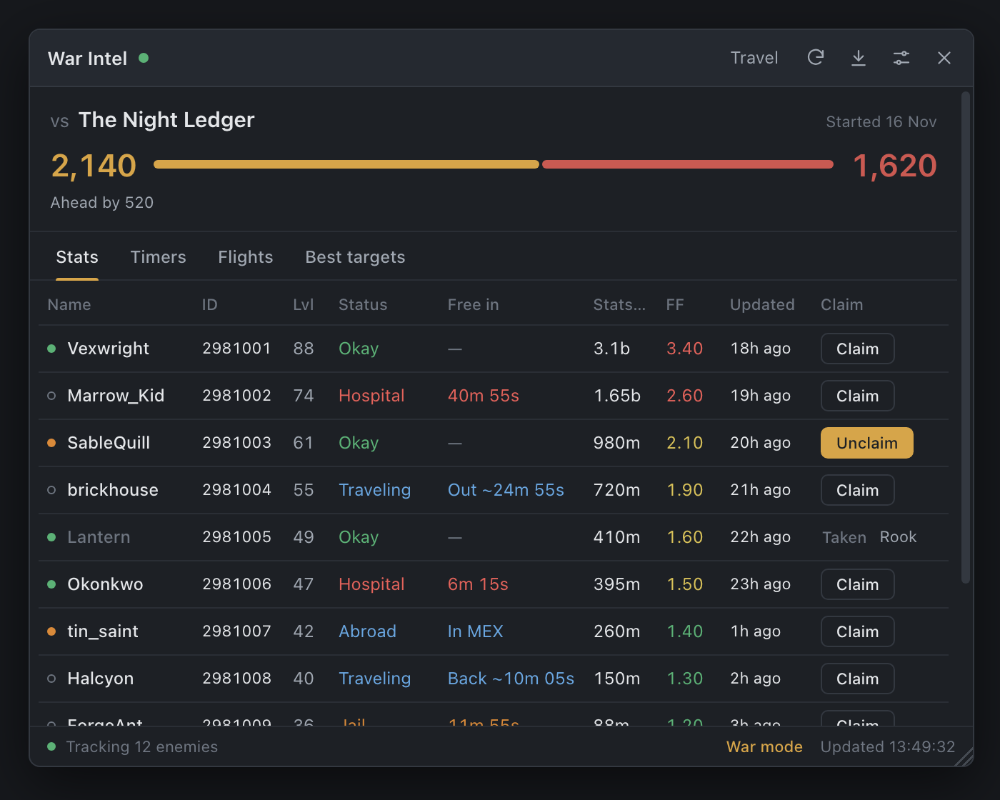
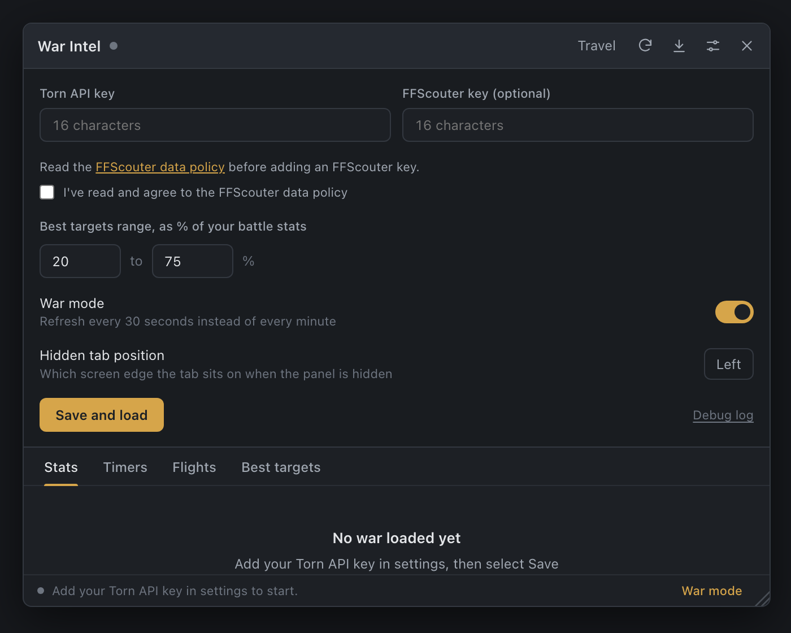
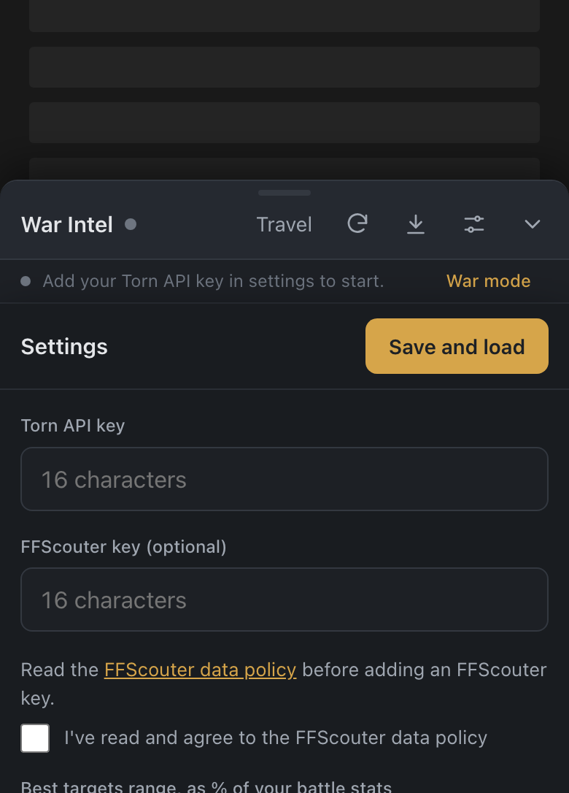
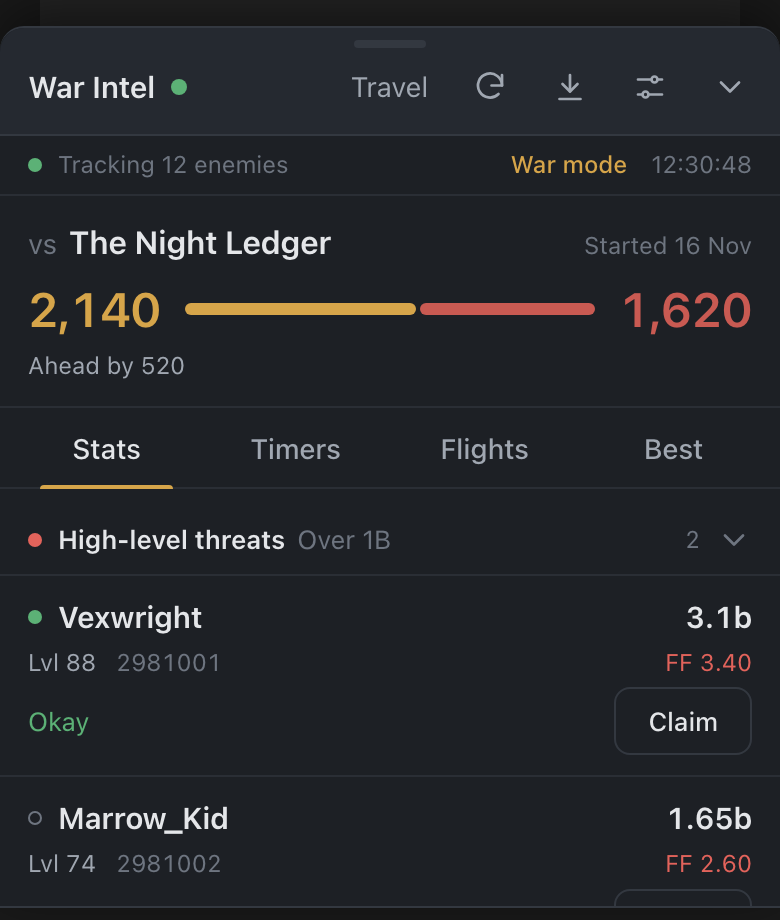
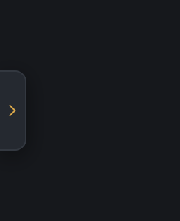
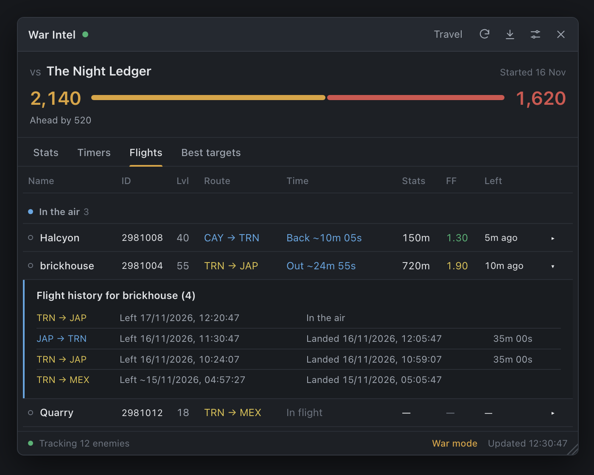
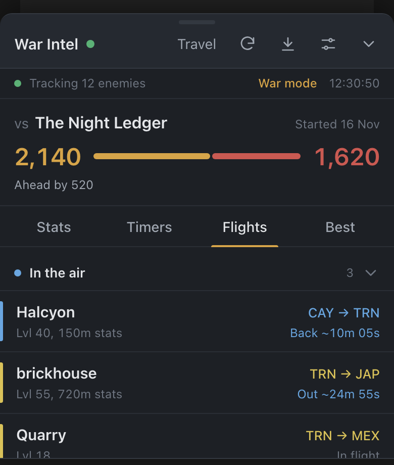

A ranked war dashboard for Torn. See every enemy's stats, hospital timers and flights in one panel, claim targets so your faction doesn't double-hit, and know who's about to land.
Current versions: desktop 6.16.0, TornPDA 3.9.0

War Intel only works for members of factions that OfficialSVK has authorised. The War Intel server checks your faction every time the panel loads data, so if you leave the faction it stops working for you within about 15 minutes.
Create a Limited Access key on Torn under Settings, API keys, and give it a name you'll recognise, like "War Intel". The panel uses it to:
A Public key is enough to use the panel, but the Best targets tab won't work without battle stats access.
Enemy stat estimates and fair fight scores come from the War Intel server, so you don't need FFScouter to see them. Adding your own key from ffscouter.com registers you with FFScouter and, if you have their premium flight data, adds their arrival windows for enemies in the air. You'll need to agree to FFScouter's data policy in the panel's settings first.
Tampermonkey updates the script automatically when a new version is published.

TornPDA has its own userscript manager on iOS and Android, so you don't need anything else.
https://update.greasyfork.org/scripts/574909/Torn%20War%20Intelligence%20%28TornPDA%20Mobile%29.user.js
Shows who you're fighting and when the war started. The bar compares the scores: your faction's score is in brass on the left and the enemy's is in red on the right. Underneath it says how far ahead or behind you are.
| Dot | Meaning |
|---|---|
| Green | Connected. Data refreshes every minute on desktop and every 90 seconds on TornPDA, or every 30 seconds in War mode. |
| Grey | Connecting, or no key entered yet. |
| Red | The server can't be reached, or your key isn't from an authorised faction. The status line says which. If the server is down, the panel keeps retrying on its own. |
| Tab | What it shows |
|---|---|
| Stats | Every enemy. On desktop, select a column heading to sort by it. On TornPDA, enemies are grouped into threat tiers; tap a group to fold it away. |
| Timers | Who you can hit now first, then who's in hospital or jail, soonest out first, with live countdowns. |
| Flights | Who's in the air, who's abroad, and who landed back in Torn in the last 30 minutes. See flights and arrival times. |
| Best targets | Enemies whose estimated stats fall in your chosen range, by default 20% to 75% of your own. Change the range in settings. |

| Item | Meaning |
|---|---|
| Online dot | online, idle, offline. |
| Name | Select it to open their attack page. The panel hides itself so the attack screen is clear. |
| Status | Okay, Hospital, Jail, Traveling or Abroad. Hover on desktop to see Torn's full description. |
| Free in | Time until they leave hospital or jail. For travellers it shows when they land: "Out" for flights abroad, "Back" for flights home. |
| Stats | FFScouter's estimate of their total battle stats. |
| FF | Fair fight: under 1.5 is easy, 1.5 to 2.49 is fair, 2.5 and above is hard. |
| Updated | How old FFScouter's estimate is. |
| Button | What it does |
|---|---|
| Travel | Opens the travel agency and hides the panel. |
| Refresh | Loads the latest data now. |
| Export | Saves a report of the enemy faction. See exporting a report. |
| Settings | Keys, the Best targets range, War mode and where the hidden tab sits. |
| Hide | Hides the panel (the cross on desktop, the down arrow on TornPDA). A small tab stays on the edge of the screen; select it to bring the panel back. |
On desktop you can drag the panel by its title bar and resize it from the bottom-right corner. It remembers its position and size.
On TornPDA, tap the panel's header to fold it away and tap the tab to bring it back.

Claims stop two people from your faction hitting the same enemy. Everyone running War Intel sees them within a couple of seconds.
Torn doesn't say when travellers will land, so War Intel works it out. During a war, the War Intel server checks the enemy faction every 30 seconds and records each time someone takes off and lands.
A return flight takes the same time as the flight out, because players use the same travel class both ways. So once the server has seen an enemy fly out, it knows when they'll be back.
| You see | Meaning |
|---|---|
| Back ~10m 05s | Flying home, landing in about 10 minutes, timed from their flight out. Accurate to within Torn's normal 3% variation. Hover on desktop for details. |
| Out ~24m 55s | Flying abroad, timed from their last flight to the same place. |
| Out 8m – 26m | A range, when we know when they left but haven't timed them before. It covers the fastest to the slowest travel class. |
| In flight | They were already in the air when we started watching, so there's no estimate for this flight. |
| Landing | Due now; they'll show as landed on the next refresh. |
Estimates get better as the war goes on: the server needs to see each enemy fly once before it can time them. Flights from the last 7 days count, so a second war against the same faction starts with times already known.
On the Flights tab, select an enemy to see their flight history: each route, when they left and landed, and how long the flight took. Times marked "~" are approximate.


| Setting | What it does |
|---|---|
| Torn API key | Your own key. See before you start. |
| FFScouter key | Optional. Adds FFScouter's flight arrival windows. |
| Best targets range | The stat range for the Best targets tab, as a percentage of your own battle stats. |
| War mode | Refreshes your panel every 30 seconds instead of every minute (desktop) or 90 seconds (TornPDA). It only changes how often your panel updates: the server watches the enemy every 30 seconds either way. |
| Hidden tab position | Which edge of the screen the tab sits on when the panel is hidden. |
Keys and the Best targets range save when you select Save and load. War mode and the tab position save as soon as you change them.
The Export button saves a list of every enemy, grouped by threat tier, with their ID and estimated stats.
TornPDA's Stats tab and the exported report group enemies by their estimated total battle stats.
| Tier | Estimated stats |
|---|---|
| High-level threats | Over 1B |
| Mid-level threats | 100M to 999M |
| Low-level threats | 1M to 99M |
| Cannon fodder | Under 1M |
| Too low | Under 1K |
| No stats estimate | FFScouter has no estimate for them yet |
| Question | Answer |
|---|---|
| Where is my key kept? | In your browser's userscript storage (TornPDA's storage on mobile). It's sent to the War Intel server so it can check your faction, never as part of a web address, so it doesn't end up in logs. |
| Does the server store it? | No. It keeps a one-way fingerprint of the key with your player and faction ID for up to 15 minutes, so it doesn't have to ask Torn on every refresh. Old fingerprints are deleted after a day. |
| Is it shared? | No. Your key only goes to the War Intel server and to Torn. Your FFScouter key only goes to FFScouter. |
| What does War Intel read? | Your faction (to check you're allowed in), your name and player ID (for claims), and your battle stats, read in your browser only, for the Best targets tab. |
| What access does it need? | Limited Access. A Public key works for everything except Best targets. |
You can delete the key on Torn's API page at any time to stop War Intel using it.
The server checked your key and you're not in an authorised faction. Make sure you're using your own key and that you're still in the faction. If you've just joined, select Refresh after a few minutes.
The server is down or restarting. The panel keeps retrying on its own and fills back in once the server is up. If it lasts more than a few minutes, let OfficialSVK know.
Normal between wars. The panel fills in automatically when your faction's ranked war starts.
Your key can't read your battle stats. Create a Limited Access key, paste it into settings and select Save and load.
FFScouter has no estimate for that player yet. New estimates are picked up every 5 minutes during a war.
They were already in the air when the server started watching, so their take-off time is unknown. Their next flight will be timed.
It's hidden. Look for the small tab with a brass arrow on the left or right edge of the screen and select it. Clicking a name or Travel hides the panel on purpose so it's out of the way.
iPhones don't allow downloads here, so the report is copied to your clipboard instead. A message at the bottom confirms it. Open a Torn mail and paste.
Reinstall from Greasy Fork using the buttons at the top of this page. If it still happens, open Settings, select Debug log (desktop) and send OfficialSVK a screenshot of the log, with your key covered.